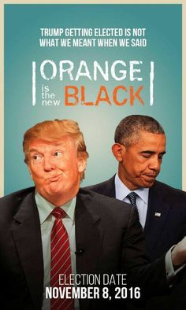
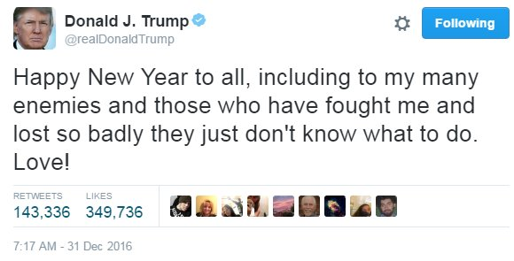
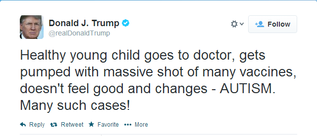
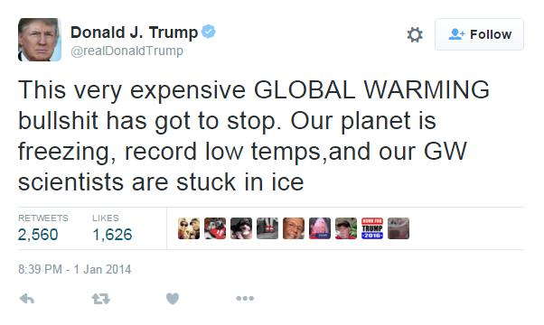
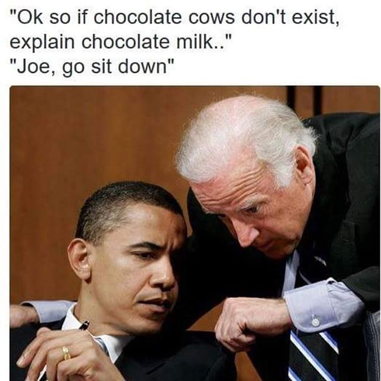
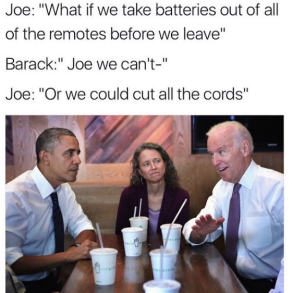

You're feeling happy.
Happy: 0.5
Sad: 0.5
Surprised: 0.5
Angry: 0.5
Sad: 0.5
Surprised: 0.5
Angry: 0.5
Lorem Khaled Ipsum is a major key to success. Look at the sunset, life is amazing, life is beautiful, life is what you make it. Cloth talk. Another one. Let me be clear, you have to make it through the jungle to make it to paradise, that’s the key, Lion! They don’t want us to eat. Watch your back, but more importantly when you get out the shower, dry your back, it’s a cold world out there. I told you all this before, when you have a swimming pool, do not use chlorine, use salt water, the healing, salt water is the healing. How’s business? Boomin.
Let’s see what Chef Dee got that they don’t want us to eat. The first of the month is coming, we have to get money, we have no choice. It cost money to eat and they don’t want you to eat. The key to success is to keep your head above the water, never give up. Stay focused. They will try to close the door on you, just open it. Eliptical talk. The other day the grass was brown, now it’s green because I ain’t give up. Never surrender.
Don’t ever play yourself. Life is what you make it, so let’s make it. Special cloth alert. Eliptical talk. The ladies always say Khaled you smell good, I use no cologne. Cocoa butter is the key. To be successful you’ve got to work hard, to make history, simple, you’ve got to make it. Bless up. Cloth talk. Hammock talk come soon. They will try to close the door on you, just open it. It’s important to use cocoa butter. It’s the key to more success, why not live smooth? Why live rough?Major key, don’t fall for the trap, stay focused. It’s the ones closest to you that want to see you fail. Fan luv. How’s business? Boomin. They don’t want us to win. Lion! You should never complain, complaining is a weak emotion, you got life, we breathing, we blessed. You see the hedges, how I got it shaped up? It’s important to shape up your hedges, it’s like getting a haircut, stay fresh. To succeed you must believe. When you believe, you will succeed.
Egg whites, turkey sausage, wheat toast, water. Of course they don’t want us to eat our breakfast, so we are going to enjoy our breakfast. Life is what you make it, so let’s make it. The key is to enjoy life, because they don’t want you to enjoy life. I promise you, they don’t want you to jetski, they don’t want you to smile. The key is to enjoy life, because they don’t want you to enjoy life. I promise you, they don’t want you to jetski, they don’t want you to smile. In life there will be road blocks but we will over come it.
Egg whites, turkey sausage, wheat toast, water. Of course they don’t want us to eat our breakfast, so we are going to enjoy our breakfast. It’s important to use cocoa butter. It’s the key to more success, why not live smooth? Why live rough? Let me be clear, you have to make it through the jungle to make it to paradise, that’s the key, Lion! Look at the sunset, life is amazing, life is beautiful, life is what you make it. Celebrate success right, the only way, apple. The key is to enjoy life, because they don’t want you to enjoy life. I promise you, they don’t want you to jetski, they don’t want you to smile.
The key to more success is to get a massage once a week, very important, major key, cloth talk. They don’t want us to win. The ladies always say Khaled you smell good, I use no cologne. Cocoa butter is the key. It’s important to use cocoa butter. It’s the key to more success, why not live smooth? Why live rough? A major key, never panic. Don’t panic, when it gets crazy and rough, don’t panic, stay calm. The key is to enjoy life, because they don’t want you to enjoy life. I promise you, they don’t want you to jetski, they don’t want you to smile.
The first of the month is coming, we have to get money, we have no choice. It cost money to eat and they don’t want you to eat. I told you all this before, when you have a swimming pool, do not use chlorine, use salt water, the healing, salt water is the healing. You see the hedges, how I got it shaped up? It’s important to shape up your hedges, it’s like getting a haircut, stay fresh. We the best. You should never complain, complaining is a weak emotion, you got life, we breathing, we blessed.
Look at the sunset, life is amazing, life is beautiful, life is what you make it. I told you all this before, when you have a swimming pool, do not use chlorine, use salt water, the healing, salt water is the healing. You see that bamboo behind me though, you see that bamboo? Ain’t nothin’ like bamboo. Bless up. You see the hedges, how I got it shaped up? It’s important to shape up your hedges, it’s like getting a haircut, stay fresh. Stay focused.
The key is to enjoy life, because they don’t want you to enjoy life. I promise you, they don’t want you to jetski, they don’t want you to smile. Special cloth alert. You do know, you do know that they don’t want you to have lunch. I’m keeping it real with you, so what you going do is have lunch. Every chance I get, I water the plants, Lion! Another one. You do know, you do know that they don’t want you to have lunch. I’m keeping it real with you, so what you going do is have lunch. You should never complain, complaining is a weak emotion, you got life, we breathing, we blessed.
I’m giving you cloth talk, cloth. Special cloth alert, cut from a special cloth. In life you have to take the trash out, if you have trash in your life, take it out, throw it away, get rid of it, major key. Watch your back, but more importantly when you get out the shower, dry your back, it’s a cold world out there. How’s business? Boomin. Don’t ever play yourself. It’s on you how you want to live your life. Everyone has a choice. I pick my choice, squeaky clean.
Congratulations, you played yourself. I’m giving you cloth talk, cloth. Special cloth alert, cut from a special cloth. Bless up. It’s important to use cocoa butter. It’s the key to more success, why not live smooth? Why live rough? Cloth talk. They don’t want us to eat. Don’t ever play yourself. Hammock talk come soon. They will try to close the door on you, just open it. You see that bamboo behind me though, you see that bamboo? Ain’t nothin’ like bamboo. Bless up. Put it this way, it took me twenty five years to get these plants, twenty five years of blood sweat and tears, and I’m never giving up, I’m just getting started.